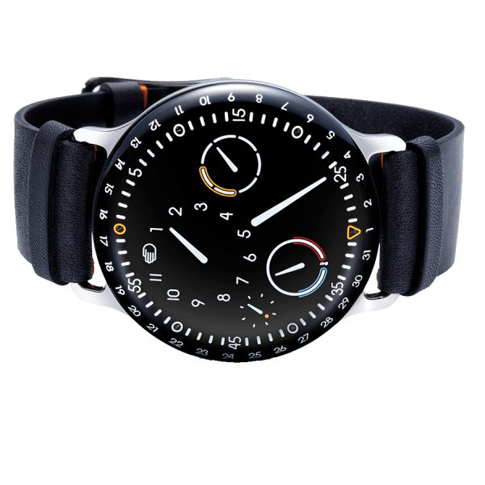

A PROPOS DE NOUS

À props de WATCHSTORE Est une boutique en ligne dédiée à fournir à nos clients, les dernières tendances en matière de montres.
Nous nous efforçons de rendre la mode accessible à tous en proposant
une large gamme de produits de qualité à des prix abordables.Notre histoireFondée en [année de fondation], [Entreprise] a commencé comme une petite entreprise familiale avec une passion pour la mode.
Au fil des ans, nous avons grandi et évolué, mais notre engagement envers la qualité et le service client est resté constant.
Nous sommes fiers de notre parcours et reconnaissants envers nos clients qui nous ont soutenus tout au long de notre croissance.
Notre missionChez WATCHSTORE, notre mission est de rendre la mode accessible à tous, peu importe leur style, leur taille ou leur budget.
Nous croyons que chacun devrait avoir la possibilité de s'exprimer à travers ses vêtements, et c'est pourquoi nous nous efforçons de proposer une gamme diversifiée de produits qui répondent aux besoins de chacun.
Notre engagement envers la qualitéLa qualité est notre priorité absolue.
Nous travaillons en étroite collaboration avec des fournisseurs de confiance pour nous assurer que chaque produit que nous proposons répond à nos normes élevées en matière de qualité et de durabilité.
De la sélection des tissus à la conception finale, nous veillons à ce que chaque étape de notre processus de production soit rigoureusement contrôlée.
Notre équipeChez WATCHSTORE, nous sommes fiers de notre équipe passionnée et dévouée.
De nos acheteurs talentueux à notre service clientèle attentif, chaque membre de notre équipe joue un rôle crucial dans notre succès.
Nous sommes une famille ici à WATCHSTORE, et nous considérons nos clients comme faisant partie de cette famille.Contactez-nousNous sommes là pour vous aider !
Si vous avez des questions, des préoccupations ou simplement besoin d'aide pour passer une commande, n'hésitez pas à nous contacter.
Notre équipe de service clientèle amicale est disponible pour vous assister du lundi au vendredi, de 9h à 17h.Merci de votre intérêt pour [Entreprise] !Bien sûr, ce modèle peut être adapté en fonction des spécificités de l'entreprise et de ses valeurs.
AIDE
Besoin d'aide ?Bienvenue sur notre page d'aide ! Nous sommes là pour répondre à toutes vos questions et vous assister dans vos achats en ligne. Consultez les sections ci-dessous pour trouver des réponses à vos questions les plus fréquentes. Si vous ne trouvez pas ce que vous cherchez, n'hésitez pas à nous contacter directement.Comment passer une commande ?Naviguez sur notre site : Parcourez notre catalogue de produits et ajoutez les articles que vous souhaitez acheter à votre panier.Procédez au paiement : Une fois votre sélection terminée, accédez à votre panier et suivez les instructions pour finaliser votre commande et choisir votre mode de paiement.Confirmation de commande : Une fois votre commande passée avec succès, vous recevrez une confirmation par e-mail avec les détails de votre achat.Livraison et suivi de commandeFrais de livraison : Consultez notre page de livraison pour connaître les tarifs et les délais de livraison en fonction de votre région.Suivi de commande : Après l'expédition de votre commande, vous recevrez un e-mail avec un lien de suivi vous permettant de suivre l'avancement de votre livraison.Service clientèle : Si vous rencontrez des problèmes avec votre livraison ou si vous avez des questions, notre équipe de service clientèle est là pour vous aider.Retours et remboursementsPolitique de retour : Consultez notre politique de retour pour savoir comment retourner un article et obtenir un remboursement ou un échange.Processus de retour : Si vous souhaitez retourner un article, contactez notre service clientèle pour obtenir un numéro d'autorisation de retour et des instructions détaillées.Remboursements : Une fois que nous avons reçu votre retour, nous procéderons au remboursement dans les plus brefs délais selon notre politique de remboursement.Contactez-nousSi vous avez des questions supplémentaires ou si vous avez besoin d'assistance, n'hésitez pas à contacter notre équipe de service clientèle. Nous sommes disponibles par e-mail, téléphone ou chat en direct pour répondre à toutes vos questions et vous aider dans vos achats en ligne.